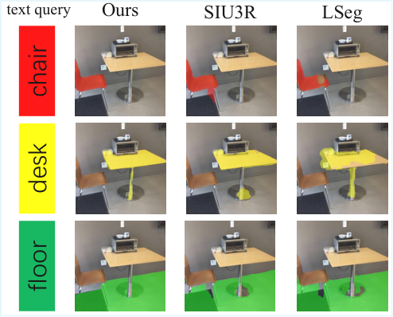
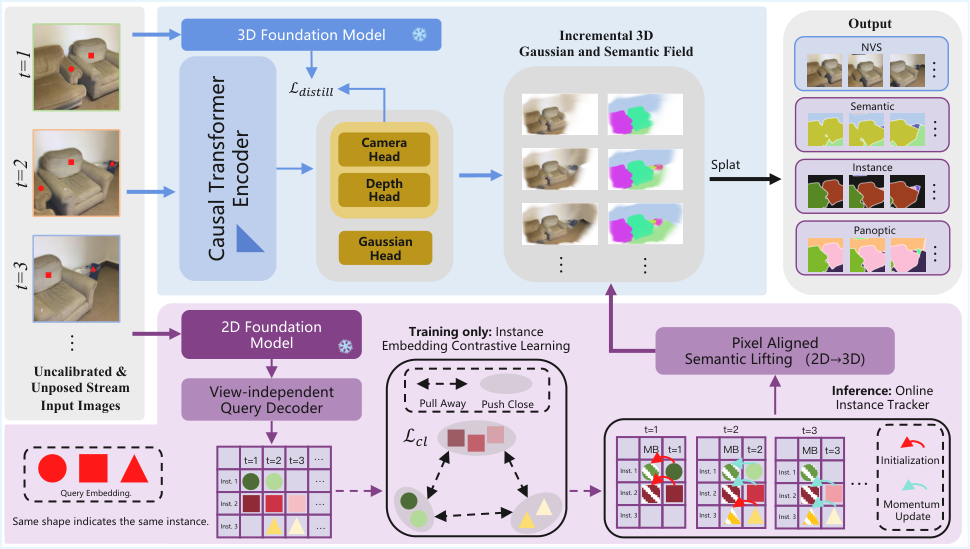
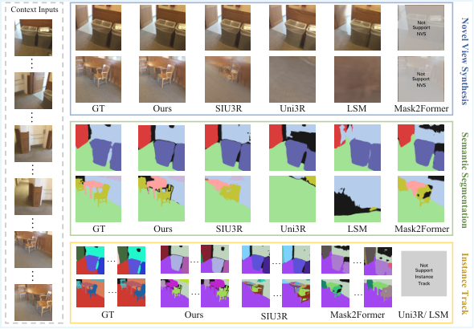
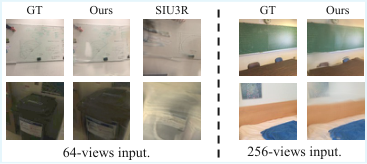
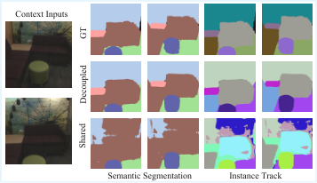
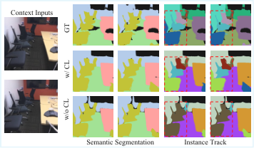

S2GS Streaming Semantic Gaussian Splatting for
简单摘要
现有的用于长图像流上的联合场景理解和重建的离线前馈方法经常对一组不断增长的过去观察结果重复执行全局计算。它不利用未来的帧并持续更新场景几何形状、外观和实例级语义，而无需重新处理历史帧。

在此约束下，如何在保持流推理的可扩展性的同时结合稳定且时间一致的语义理解仍然是一个悬而未决的问题。无需重复重新处理历史帧，它可以增量维护场景几何形状、外观和实例感知语义字段。
核心创新
第一，现有的用于长图像流上的联合场景理解和重建的离线前馈方法经常对一组不断增长的过去观察结果重复执行全局计算。
第二，它不利用未来的帧并持续更新场景几何形状、外观和实例级语义，而无需重新处理历史帧。
第三，实验表明，S2GS 在联合重建和理解基准上匹配或优于强大的离线基线，同时显着提高了长期可扩展性。
技术细节
用于增量重建的因果几何流和用于每帧预测和身份维护的语义流。受这种差异的启发，我们设计了一种面向流的语言条件查询检索机制，该机制显式地对齐语义空间并稳定时间动态。

3.1 概述及在线设置
我们考虑从未校准的 RGB 视频流中进行在线 3D 重建和实例级语义理解，其中。在某个时刻，模型仅处理当前帧以及之前步骤积累的持久状态，而不重新处理历史帧。用于增量重建的因果几何流和用于每帧预测和身份维护的语义流。
3.2 用于 3D 高斯回归的因果变换器
在因果约束下，Transformer聚合信息形成几何特征。为了稳定在线重建，我们从严格因果预训练的 3D 基础模型（教师）中遵循并提取几何监督。生成的高斯曲线逐渐累积成持久的全局场景表示，并用于可微分渲染。
3.3 在线实例跟踪和语义稳定
为了防止几何更新的干扰，语义表示学习与几何建模分离。我们优化监督对比损失。生成的 3D 语义场可以从任意视点渲染，从而产生时间上和视图一致的语义和实例预测。
3.4 语言驱动的开放词汇分割
遵循 SIU3R，我们将语言驱动的分段制定为语言条件查询检索，以支持开放词汇分段。受这种差异的启发，我们设计了一种面向流的语言条件查询检索机制，该机制显式地对齐语义空间并稳定时间动态。来自语义解码器的查询嵌入是针对掩码预测和实例关联优化的内部表示。
$$ M_{t,\tau}= \begin{cases} 0, & \tau\le t,\\ -\infty, & \tau>t. \end{cases} $$
这条公式定义了论文中的一个核心计算关系。阅读时可以先确认左侧要得到的结果，再看右侧由 tau、cases、tau、le 如何共同构成这个结果。
$$ \mathcal{G}_t=\mathrm{BackProj}\!\left(\hat{D}_t,\hat{P}_t\right)\ \oplus\ \hat{A}_t. $$
这条公式定义了论文中的一个核心计算关系。阅读时可以先确认左侧要得到的结果，再看右侧由 G、t、mathrm、BackProj 如何共同构成这个结果。
$$ \mathbf{Q}_t = \mathrm{Dec}\!\left(\mathbf{Q}_0,\ \{\mathbf{F}_t^{(m)}\}\right). $$
这条公式定义了论文中的一个核心计算关系。阅读时可以先确认左侧要得到的结果，再看右侧由 Q、t、mathrm、Dec 如何共同构成这个结果。
$$ \mathcal{L}_{\mathrm{cl}} = \sum_{i=1}^{|\mathcal{Z}|} \frac{-1}{|\mathcal{P}(i)|} \sum_{p\in\mathcal{P}(i)} \log \frac{\exp(\mathbf{z}_i^\top \mathbf{z}_p / \tau)} {\sum_{a\neq i}\exp(\mathbf{z}_i^\top \mathbf{z}_a / \tau)}, $$
这条公式定义了论文中的一个核心计算关系。阅读时可以先确认左侧要得到的结果，再看右侧由 L、mathrm、cl、Z 如何共同构成这个结果。
$$ A_{i,k}^t = \cos(\mathbf{z}_i^t,\ \bar{\mathbf{z}}_k^{t-1}), $$
这条公式定义了论文中的一个核心计算关系。阅读时可以先确认左侧要得到的结果，再看右侧由 k、t、cos、z 如何共同构成这个结果。
$$ \bar{\mathbf{z}}_k^{t} = \mathrm{Norm}\!\left((1-\alpha)\bar{\mathbf{z}}_k^{t-1} + \alpha\,\mathbf{z}_i^t\right), $$
这条公式定义了论文中的一个核心计算关系。阅读时可以先确认左侧要得到的结果，再看右侧由 bar、z、k、t 如何共同构成这个结果。
$$ \mathbf{u}_{t,n} = g_\theta(\mathbf{Q}_t[n]) \in \mathbb{R}^{C_s}, $$
这条公式定义了论文中的一个核心计算关系。阅读时可以先确认左侧要得到的结果，再看右侧由 u、t、n、g 如何共同构成这个结果。
$$ s_{t,n} = \cos(\mathbf{u}_{t,n}, \mathbf{e}_r), \quad n^\star = \arg\max_n s_{t,n}. $$
这条公式定义了论文中的一个核心计算关系。阅读时可以先确认左侧要得到的结果，再看右侧由 n、cos、u、t 如何共同构成这个结果。
实验结论
实验主要验证：我们在 ScanNet 上评估 S2GS 并将其与离线前馈基线进行比较。结果上，表报告了这些文本查询的 mIoU，其中我们的方法实现了最佳性能，优于 SIU3R 和 LSeg。
| Method | 2 views | 8 views | ||||||||
|---|---|---|---|---|---|---|---|---|---|---|
| (lr)2-6(lr)7-11 | PSNR | SSIM | mIoU | T-mIoU | T-SR | PSNR | SSIM | mIoU | T-mIoU | T-SR |
| pixelSplat | 24.76 | 0.804 | - | - | - | - | - | - | - | - |
| MVSplat | 23.63 | 0.784 | - | - | - | - | - | - | - | - |
| NoPoSplat | 25.27 | 0.811 | - | - | - | - | - | - | - | - |
| Mask2Former | - | - | 47.32 | 42.11 | 90.17 | - | - | 45.85 | 31.93 | 66.55 |
| LSeg | - | - | 33.27 | - | - | - | - | 32.87 | - | - |
| LSM | 22.38 | 0.714 | 31.31 | - | - | - | - | - | - | - |
| Uni3R | 25.44 | 0.812 | 32.18 | - | - | 18.16 | 0.627 | 33.75 | - | - |
| SIU3R | 25.79 | 0.819 | 47.83 | 44.25 | 85.07 | 19.74 | 0.653 | 44.78 | 29.41 | 62.93 |





4.1 实验装置
实验主要验证：我们使用 SIU3R 预处理帧在 ScanNet 上进行训练和验证。结果上，由于目前没有公开可用的在线前馈 3DGS 方法，因此我们与代表性的离线方法进行比较，包括 SIU3R 、 Uni3R 和 LSM。
4.2 结果
实验主要验证：我们在 ScanNet 上评估 S2GS 并将其与离线前馈基线进行比较。结果上，尽管如此，随着输入视图数量的增加（8/14/32），S2GS 在重建质量和时间语义/实例一致性方面持续改进并实现了强大的性能。
4.3 消融研究
实验主要验证：共享主干上的消融与几何结构的消融——语义解耦。结果上，正如表所示，几何语义解耦导致每帧语义准确性的明显提高，并在时间实例一致性指标方面产生更大的收益。
理解评价
如果把这篇论文放回问题背景里看，它真正的价值在于：它不利用未来的帧，并持续更新场景几何、外观和实例级语义，而无需重新处理历史帧，从而实现可扩展的在线联合重建和理解。这说明作者不是只补一个局部模块，而是在重新组织问题该怎样被解决。
最能支撑这个判断的，还是实验给出的证据：实验表明，S2GS 在联合重建和理解基准上匹配或优于强大的离线基线，同时显着提高了长期可扩展性。换句话说，这些设计并不只是概念上更完整，而是实实在在改变了最终结果。
当然，它离真正成熟的方案还有距离：当前方案仍然受到计算资源、输入质量或场景复杂度的约束，离真正大规模稳定部署还有距离。后续更值得继续推进的方向，是 同时提升效率、泛化能力以及在更复杂场景下的稳定性。